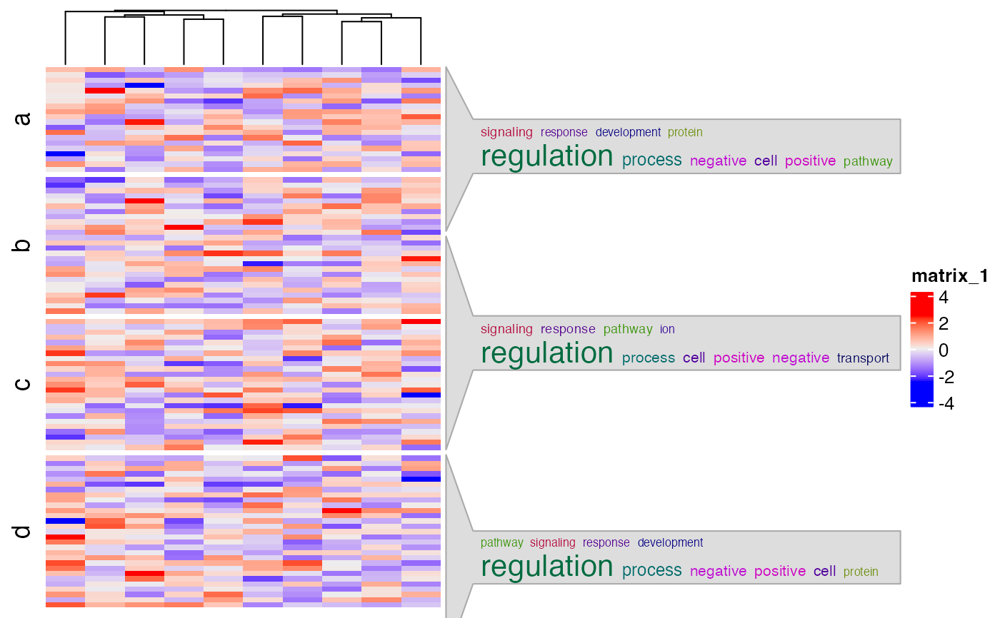

Word cloud annotations
Usage
anno_word_cloud(
align_to,
term,
exclude_words = NULL,
max_words = 10,
word_cloud_grob_param = list(),
fontsize_range = c(4, 16),
value_range = NULL,
bg_gp = gpar(fill = "#DDDDDD", col = "#AAAAAA"),
side = c("right", "left"),
add_new_line = FALSE,
count_words_param = list(),
...,
return_gbl = FALSE
)Arguments
- align_to
How to align the annotations to the heatmap. Similar as in
ComplexHeatmap::anno_link, the value ofalign_tocan be a list of row indices or a categorical vector where each vector in the list corresponds to a word cloud. If it is a categorical vector, rows with the same level correspond to a same word cloud. Ifalign_tois a categorical vector andtermis a list, names oftermshould have overlap to the levels inalign_to. Whenalign_tois set as a categorical vector, normally the same value is set torow_splitin the main heatmap so that each row slice can correspond to a word cloud.- term
The description text used for constructing the word clouds. The value should have the same format as
align_to. Ifalign_tois a list,termshould also be a list. In this case, the length of vectors intermis not necessarily the same as inalign_to. E.g.length(term[[1]])is not necessarily equal tolength(align_to[[1]]. Ifalign_tois a categorical vector,termshould also be a character vector with the same length asalign_to. To make it more genrall, whenalign_tois a list,termcan also be a list of data frames where the first column contains keywords and the second column contains numeric values that will be mapped to font sizes in the word clouds.- exclude_words
The words excluced for construcing word cloud.
- max_words
Maximal number of words visualized in the word cloud.
- word_cloud_grob_param
A list of graphics parameters passed to
word_cloud_grob.- fontsize_range
The range of the font size. The value should be a numeric vector with length two. The font size interpolation is linear.
- value_range
The range of values to map to font sizes.
- bg_gp
Graphics parameters for controlling the background.
- side
Side of the annotation relative to the heatmap.
- add_new_line
Whether to add new line after every word? If
TRUE, each word will be in a separated line.- count_words_param
A list of parameters passed to
count_words.- ...
Other parameters.
- return_gbl
Internally used.
Details
The word cloud annotation is constructed by ComplexHeatmap::anno_link.
If the annotation is failed to construct or no keyword is found, the function returns a ComplexHeatmap::anno_empty with 1px width.
English stop words, punctuation and numbers are removed by default when counting words. As specific stop words might
coincide with gene or pathway names, and numbers in genes names might be meaningful it is recommended to adjust this
behaviour by passing appropriate arguments to the count_words function using count_words_param.
Examples
gm = readRDS(system.file("extdata", "random_GO_BP_sim_mat.rds", package = "simplifyEnrichment"))
go_id = rownames(gm)
go_term = AnnotationDbi::select(GO.db::GO.db, keys = go_id, columns = "TERM")$TERM
#> 'select()' returned 1:1 mapping between keys and columns
split = sample(letters[1:4], 100, replace = TRUE)
align_to = split(1:100, split)
term = lapply(letters[1:4], function(x) sample(go_term, sample(100:400, 1)))
names(term) = letters[1:4]
require(ComplexHeatmap)
#> Loading required package: ComplexHeatmap
#> Loading required package: grid
#> ========================================
#> ComplexHeatmap version 2.18.0
#> Bioconductor page: http://bioconductor.org/packages/ComplexHeatmap/
#> Github page: https://github.com/jokergoo/ComplexHeatmap
#> Documentation: http://jokergoo.github.io/ComplexHeatmap-reference
#>
#> If you use it in published research, please cite either one:
#> - Gu, Z. Complex Heatmap Visualization. iMeta 2022.
#> - Gu, Z. Complex heatmaps reveal patterns and correlations in multidimensional
#> genomic data. Bioinformatics 2016.
#>
#>
#> The new InteractiveComplexHeatmap package can directly export static
#> complex heatmaps into an interactive Shiny app with zero effort. Have a try!
#>
#> This message can be suppressed by:
#> suppressPackageStartupMessages(library(ComplexHeatmap))
#> ========================================
mat = matrix(rnorm(100*10), nrow = 100)
Heatmap(mat, cluster_rows = FALSE, row_split = split,
right_annotation = rowAnnotation(foo = anno_word_cloud(align_to, term)))
